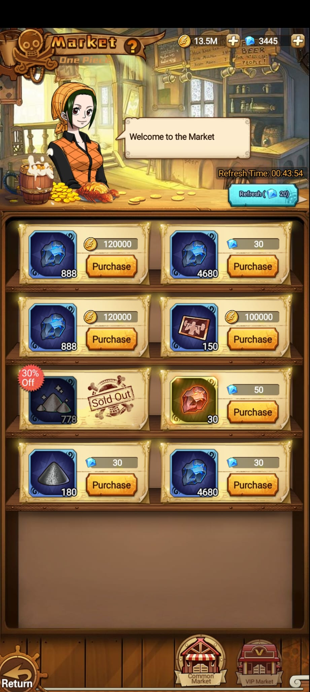
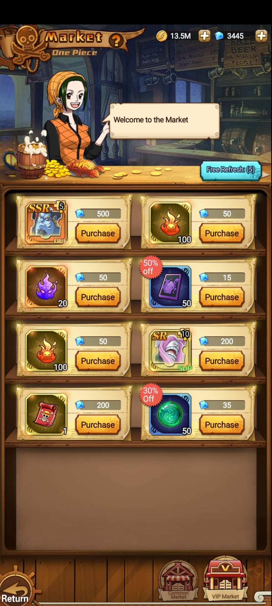

Monedas
Se observan compras por oro y diamantes. Recursos visibles arriba: 13.5M oro y 3445 diamantes.
Tienda
Market permite comprar fragmentos, materiales y recursos usando oro o diamantes. Tiene Common Market y VIP Market, refresco gratis o pago, y productos con descuentos o stock agotado.
Capturas


Lectura
Se observan compras por oro y diamantes. Recursos visibles arriba: 13.5M oro y 3445 diamantes.
Common Market muestra refresh pago por 20 diamantes y temporizador. VIP Market muestra Free Refresh (5).
Hay productos con Sold Out, descuentos 30%/50% y cantidades como 4680, 888, 150 o fragmentos x10.
Uso recomendado
Es la tienda diaria mas basica. Conviene revisarla por materiales baratos en oro, recursos de mejora y ofertas puntuales antes de gastar diamantes en refrescar.
Muestra objetos mas raros, fragmentos SSR/SR y recursos especiales. Casi todo lo visible usa diamantes, asi que los descuentos del 30% o 50% son los puntos mas importantes para decidir compras.
Common Market tiene temporizador y refresh pago de 20 diamantes. VIP Market muestra Free Refresh (5), por lo que vale la pena usar primero los refrescos gratis antes de gastar moneda premium.
Items observados
| Pestana | Coste visible | Objetos detectados | Notas |
|---|---|---|---|
| Common Market | Oro y diamantes | Material azul x888/x4680, ticket x150, mineral/polvo, recurso rojo x30 | Hay Sold Out y descuento 30% off. |
| VIP Market | Diamantes | Fragmento SSR x5, fragmento SR x10, llamas/materiales, ticket y orbe verde | Hay descuentos 30% y 50% off; Free Refresh (5). |
| Acceso | - | Se entra desde el mapa de ciudad | El icono Market aparece en Main City junto a otros modos. |